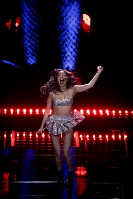

La cantante estadounidense Olivia Rodrigo ha encabezado dos giras de conciertos para promocionar sus álbumes de estudio. Comenzando por el "SOUR TOUR" dónde concretó hasta 49 shows, entre Europa y America del norte. Su segunda gira de conciertos "Guts World Tour" la llevó a realizar 102 conciertos, sumando a la lista Asia, America del sur y Oceanía.
